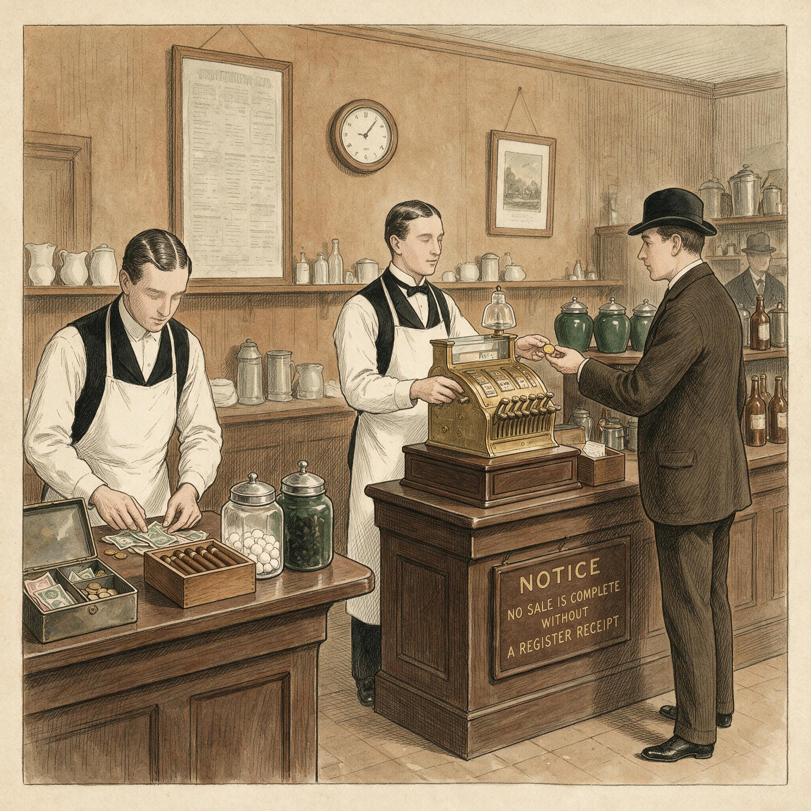

第 1 章
收银机前的尊严
亨利·福特把工人日薪翻倍到五美元的那天，全美制造业协会的电话被打爆了。不是祝贺的电话。是愤怒、恐慌、质问的电话。

收银机前的尊严：历史出版插图
AI 生成插图，非史实影像。
一个工厂主在电话里冲协会秘书吼：他疯了吗？他要把整个工业体系毁掉吗？《华尔街日报》第二天刊发的社论标题直接用了“社会主义者”这个词，后面跟了一个问号，但问号只是修辞上的客气。《纽约时报》措辞稍微收敛，结论一样：这种工资水平会引发毁灭性的竞赛，没有人能幸存。密歇根州一家机械厂的老板对记者说，福特“正在用金钱腐蚀工人阶级的灵魂”。
这不是夸张。翻看1914年1月到3月间美国主要商业期刊的评论，批评的比例超过九成。批评的逻辑高度一致：工资是成本，成本越低利润越高，这是资本主义的常识。把成本翻倍，要么是做慈善，要么是搞破坏。慈善不是企业该干的事，破坏更不是。
但福特自己算的是一笔完全不同的账。这笔账的起点，藏在一个让人头疼的数字里。1913年，福特高地公园工厂的工人年离职率是370%。这个数字意味着什么？
这笔账指向一个当时还未被清晰阐述的闭环：工人不仅是生产者，也必须是消费者。如果生产效率的提升无法通过内部消费消化，增长就会停滞。福特看到的正是这个循环的断裂点。
意味着工厂一年之内要把所有岗位上的工人换三遍半。不是个别岗位，是所有岗位。原因不复杂：流水线太苦了。福特在1913年全面推行移动装配线之后，T型车的组装时间从十二个半小时压缩到九十三分钟，效率翻了近八倍。代价是工人的劳动强度。站在同一个位置，重复同一个动作，一天九个小时，一周六天。
日薪两块五在当时不算低——全美制造业平均日薪大约两块二——但也没高到能让人忍受这种工作。福特后来在自传里写过一句话，大意是：降低工资是最容易的削减成本方式，也是最愚蠢的。这句话是不是事后美化不好判断，但数据是硬的。
离职率370%意味着每招一个工人、培训他上岗、等他熟练到不出次品，他干几个月就走了，你得重新招、重新培训。招聘成本、培训成本、新手次品率带来的损耗，这些账加在一起，实际人力成本远高于工资单上的数字。这是第一笔账。
还有第二笔，这笔账指向的不是工厂内部，而是工厂外面的人。1914年初，T型车售价550美元左右。
福特的目标是把价格压到400美元以下，让更多人买得起。但问题是，如果一个工人的日薪是两块五，一年干满三百天，不吃不喝也只有750美元。一辆T型车要花掉他大半年的全部收入。谁会这么干？答案是没几个人。
1913年全美汽车保有量约一百二十万辆，对比一亿人口，渗透率刚过1%。汽车是富人的玩具，不是工人的交通工具。福特看到了一个矛盾：他在用流水线疯狂压低汽车成本，但压低成本的目的是卖更多车，而卖更多车的前提是有人买得起。如果工人的工资不涨，生产效率越高，产品越便宜，但越便宜也没人买，因为工资没变。
这不是市场饱和的问题，是支付能力的结构性问题。流水线能压低的只有单车成本，它压不低收入门槛。
把这两笔账合在一起，福特的逻辑就清楚了：提高工资不是成本，是投资。投资在降低离职率上，投资在创造消费者上。五美元日薪让工人从“买不起车的人”变成“买得起车的人”，而他们买的车，正是自己生产的T型车。这个闭环在当时的工业界是全新的。
十九世纪的工业资本家想的是压低工资、压低成本、压低价格，然后把产品卖给别的地方的人——卖给其他城市的居民，卖给海外市场。福特的思路刚好相反：把工资提上去，把自己的工人变成自己的顾客。
这个颠倒不是技术进步的必然结果，它是一个具体的制度选择。福特完全可以不涨工资。他的利润已经很好了，市场份额已经在增长了，流水线已经让他比所有竞争对手都有成本优势。离职率370%是个问题，但解决方式不止涨工资一种——可以加强工头管制，可以雇佣更听话的移民工人，可以把流水线速度调慢一点。当时大多数工厂就是这么做的。
福特选了另一条路。1914年1月12日，五美元日薪政策正式生效。当天凌晨三点，高地公园工厂门口排起了上万人的长队。底特律的报纸描述说，排队的人裹着毯子在零下的气温里站了一整夜。福特公司不得不用消防水龙头驱散人群，人太多了，场面一度失控。
这个细节经常被用来证明五美元日薪的吸引力，但它同时说明另一件事：当时底特律劳动力市场上，普通工人的日薪普遍在两块到三块之间，五美元是一个破格的价格。但五美元不是无条件给的。
福特同时宣布了“利润分享计划”的细则。五美元日薪分成两部分：基本工资约两块五，剩下的部分是“利润分享”，只有符合特定条件的工人才能拿到。条件包括：在福特工作满六个月；没有酗酒、赌博等行为；家庭生活“符合标准”。福特专门成立了一个“社会部”，派出调查员到工人家里检查卫生状况、子女教育情况、家庭支出结构。不符合标准的，只能拿基本工资。
这个细节经常被忽略，但它至关重要。福特不是在发钱，他是在用钱买一种生活方式。他要的不只是工人来上班，他要工人变成某种类型的人——有储蓄习惯、家庭稳定、不酗酒、让子女上学。
为什么？因为这样的人离职率更低，生产效率更高，也更容易成为T型车的潜在买家。社会部的调查报告后来有部分公开。
一份典型的报告会记录：家庭人口数、住房条件、厨房卫生、是否有酗酒迹象、子女是否上学、家庭是否有储蓄。调查员给每个家庭打分，分数不够的，利润分享份额被扣减。这种做法在今天看来侵犯隐私到了惊人的程度，但在1914年，它被包装成“帮助工人提高生活水平”的善意。
善意与否可以争论，结果很清楚：五美元日薪确实改变了拿到它的那些家庭的支出结构。
先看食物。底特律一个五口之家的工人家庭，在日薪两块五的时代，每周食品支出大约占收入的四成到五成。主食是面包、土豆、豆类，肉食是偶尔的改善。一份1913年底特律劳工局的调查显示，低收入工人家庭每周肉食消费大约两到三磅，主要是便宜的碎肉和香肠。
五美元日薪之后，变化来得很快。1914年下半年，底特律的肉铺和杂货店营业额普遍上涨。虽然没有精确到单个家庭的追踪数据，但底特律商会的一份报告提到，1914年该市人均肉食消费比上年增长了近两成。牛肉、鲜肉的比例上升，碎肉的比例下降。牛奶、鸡蛋、新鲜蔬菜的消费也在涨。
这不是恩格尔系数在下降——恩格尔系数指的是食品支出占总支出的比例下降——而是食品结构本身在升级。工人家庭吃得更好，花在食物上的绝对金额反而更高，因为收入涨得更快。
再看教育。五美元日薪的条件之一是子女必须上学。社会部的调查员会检查学龄儿童的入学记录。对于那些本来就想让孩子上学但经济拮据的家庭，五美元日薪提供了可能性。1910年，底特律公立高中的入学率约四成出头，到1916年，这个数字超过了五成。不能全归功于福特——底特律整体经济在增长，义务教育法也在完善——但福特工人的子女入学率确实高于全市平均水平。社会部1915年的一份内部报告提到，接受利润分享的工人家庭中，十四到十六岁子女的在学比例超过七成，而同期全美同年龄段的在学比例不到五成。
还有一个变化，它直接指向本书的核心问题：分期付款。T型车在1914年的售价是490美元。五美元日薪的工人，年收入约1500美元。一辆车相当于四个月的全部收入。这不是一笔能随手掏出来的钱。
但福特需要工人买车，光靠工资积累速度太慢。于是，分期付款开始进入普通工人的生活。
二十世纪初的美国，分期付款还不是主流消费方式。它主要用在缝纫机、钢琴这些高价耐用品上，面向中产阶级家庭。工人阶层普遍靠现金交易，赊账是杂货铺里记在本子上的那种，不是正规的金融产品。福特没有自己搞汽车金融公司——那是通用汽车在1919年才做的事。但五美元日薪本身创造了一个条件：工人有了稳定且可预期的收入流，银行和信贷公司愿意借钱给他们。
1915年到1917年间，底特律的银行开始推出面向福特工人的汽车贷款。一份典型的合同结构是这样的：首付车价的三分之一，约160美元；剩下的330美元分十二个月还清，月供不到30美元；利率在6%到8%之间。对于日薪五美元的工人，月供大约相当于三天的工资。违约条款很严格：逾期两次，车辆收回，已付款不退。
这个合同结构是理解“支付接口”这个概念的第一个入口。汽车贷款把一辆490美元的车，拆成了工人月收入中可承受的一小份。就像把一块大石头敲碎成能塞进背包的小石子，你背得动，路才能走下去。
它做的不是让车变便宜，而是让支付能力从“一次性掏出全部”变成“分次掏出小份”。支付接口就是这种转换机制——它不改变商品的价格，它改变的是支付的时间结构。
这里有一个容易被忽略的事实：分期付款的前提是收入稳定。银行愿意借钱给福特工人，不是因为福特工人比别的工人更诚信，而是因为他们背后的五美元日薪是稳定的、可预期的。福特公司本身也为工人的信用背书——社会部的调查档案在银行眼里就是现成的信用评估材料。
一个循环形成了：高工资让工人能获得信贷，信贷让工人能买车，买车让福特能卖更多车，卖更多车让福特能维持高工资。这个循环的每一环都依赖制度设计：流水线压低单车成本，五美元日薪创造消费能力，社会部筛选合格工人，分期付款把大额支出拆成小额月供。缺了任何一环，循环都会断裂。
1914年到1916年，T型车销量从二十万辆跳到五十万辆，再跳到七十三万辆。价格从490美元一路降到360美元。福特的市场份额在1916年超过了全美汽车市场的一半。利润呢？
1914年福特公司利润约三千多万美元，1916年接近六千万。工资翻倍之后，利润也翻了近一倍。
那些骂福特是社会主义者的工厂主们，后来大多闭嘴了。不是因为被说服，而是因为数字太硬。1916年之后，美国制造业的平均工资开始缓慢上涨，不是因为工厂主们良心发现，而是因为他们发现不涨工资就留不住人——工人都往底特律跑了。
这里必须停下来问一个问题：五美元日薪的故事到底证明了什么？一个常见的解释是：它证明了技术进步会自然带来生活水平提高。流水线提高了效率，效率提高带来利润增长，利润增长允许工资上涨，工资上涨改善了生活。这是一个“水涨船高”的故事，核心驱动力是技术进步。这个解释听起来合理，但它漏掉了最关键的一环：选择。福特选择涨工资，而且涨到五美元这个破格的水平，不是被技术进步逼的，而是他算明白了那两笔账——降低离职率的账和创造消费者的账。这两笔账指向同一个结论：在流水线大规模生产的时代，工人的支付能力和生产效率同等重要。
这不是技术进步的自然结果，这是一个具体的制度选择。福特选择了高工资路线，并且用社会部、利润分享计划、与银行合作推分期付款等一系列制度配套，把这条路走通了。他做的不只是发钱，他做的是把“支付能力”从生产循环的外部条件，变成了生产循环的内部环节。在五美元日薪之前，工人的消费能力是生产的结果——你生产了，拿到工资，然后去消费。在五美元日薪之后，工人的消费能力变成了生产的前提——你得先确保工人买得起产品，生产才能持续循环。生产效率和支付能力，第一次在流水线的两端变得同等重要。这个顺序的颠倒，就是本章的核心论断。
工资水位抬上去之后，一个更深远的变化开始发生：消费项目开始和“体面”挂钩。在十九世纪的美国工人文化里，“体面”主要和工作有关——有一份稳定的工作，不酗酒，按时去教堂，孩子有鞋穿。消费不是衡量体面的主要标尺。一个工人家庭吃得好不好、住得好不好，有差异，但这些差异不会直接转化成社会评价。你可以穷，但只要勤恳、规矩，别人不会说你不体面。
五美元日薪之后，这个标准开始移动。第一个移动的项目是汽车。当底特律街头开始出现工人开着T型车上下班的场景时，汽车不再只是富人的玩具。它变成了一种可见的标尺：有车的人和不有车的人，被放在同一个画面里比较。这种比较不是谁刻意发起的，但它一旦存在，就会自动运作。
一份1917年底特律报纸的社会新闻栏里登过一则故事：一个福特工人开着T型车去参加妹妹的婚礼，他的连襟——一个在同一家工厂但还没资格拿利润分享的工人——觉得丢了面子，回去之后跟妻子吵了一架，决定也要攒钱买车。
五美元日薪及其配套制度，客观上启动了一个进程：将消费能力转化为一种社会性的“资格证明”。当基本生活需求通过支付被满足后，更高层次的消费开始承载定义“谁是合格的现代人”的功能。消费不再仅仅是生存的延伸，它开始异化为获取社会认可的支付接口。
这个故事是否完全真实无从考证，但它被登出来，本身就说明当时的读者已经能理解这种心理了。汽车不只是交通工具，它是一个人在社会排序中的位置信号。
第二个移动的项目是饮食。当一部分工人家庭开始每周吃上鲜牛肉、喝上鲜牛奶的时候，那些还在吃碎肉和土豆的家庭，就不再只是“吃得差一点”，而是“过得不如人”。食物消费的差异一直存在，但五美元日薪把它变成了一个更显眼的对比——因为对比发生在同一个工厂、同一条街、同一个教会里。
第三个移动的项目是教育。当福特工人的子女因为利润分享的条件而留在学校里读到高中，而隔壁工厂工人的孩子十四岁就进了车间，这种差异就不再只是家庭选择的问题。它变成了一个阶层信号：你的孩子上高中，说明你的家庭有能力、有远见；我的孩子去打工，说明我们家不行。
这些移动不是福特设计出来的。福特要的是稳定、高效的工人，不是社会分层的新标尺。但他设计的制度——高工资、利润分享、社会部审查——客观上把消费能力变成了一个筛选器。
能拿到五美元日薪的人，消费能力更强，生活方式更“体面”；拿不到的人，不仅收入低，还被贴上“不合格”的标签。这个筛选器一旦立起来，就收不回去了。因为接下来发生的事情是：那些被筛选出来的人，会用他们的消费模式定义什么是“正常生活”。当足够多的工人家庭开车上下班、吃鲜肉、让孩子读高中时，这些消费项目就不再是“改善”，而是“标配”。
达不到标配的人，不只是物质上匮乏，他们在社会意义上也被降格了。这就是“支付能力变成体面标尺”的起点。它发生在1914年的底特律，不是因为它注定要发生，而是因为福特做了一连串具体的选择。这些选择在当时被骂成社会主义，后来被赞为远见，但无论怎么评价，它们都不可逆地改变了“消费”这个东西的社会含义。在那之前，消费是生存的延伸。
你花钱是为了活下去，活得舒服一点是运气。在那之后，消费开始变成尊严的接口。你花钱不只是为了活下去，你还得通过花钱来证明你活得像个样子。而这个“样子”的标准，是由那些支付能力更强的人定义的。
1919年，福特把日薪进一步提高到六美元。同一年，通用汽车成立了通用汽车金融服务公司，专门为买车的人提供贷款。分期付款从福特工人的特供，变成了全行业的标配。支付接口的齿轮开始加速转动。
1920年，全美汽车保有量突破了八百万辆，是1913年的六倍多。其中T型车占了超过一半。这些车里的很大一部分，是工人买走的，是用贷款买走的，是用五美元日薪支撑的信用买走的。而那些买不起车的人，他们的处境开始变得不一样了。他们不是被剥夺了什么原本拥有的东西——汽车在1914年之前本来就不是工人的标配。
但他们被留在了新标准的另一边。当“体面生活”开始包含一辆汽车、更好的饮食、子女的高中教育时，支付能力就不再只是一个经济变量。它变成了一把尺子，量的是一个人站在哪里，以及他能走到哪里。这把尺子一旦被锻造成形，接下来的问题就不再是它该不该存在，而是它会被用在哪些地方——用在教育上？用在医疗上？用在住房上？
这些问题是福特没有回答的，但他的五美元日薪已经把它们推到了历史的桌面上。从1914年底特律街头的T型车，到2005年郑州家庭硬皮笔记本上的教育票据，这把尺子的衡量标准在变，但它的存在和它所制造的“支付接口”，却穿越了一个世纪。